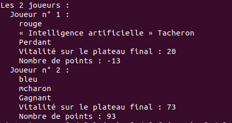
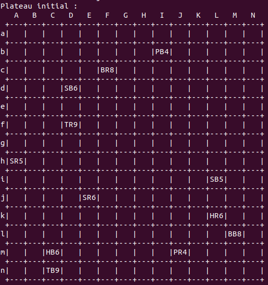
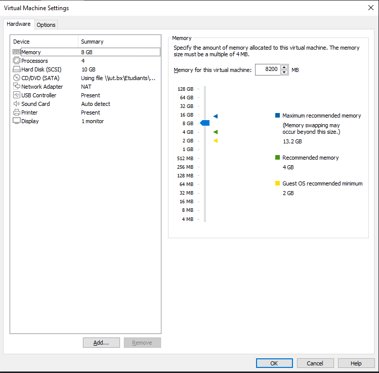
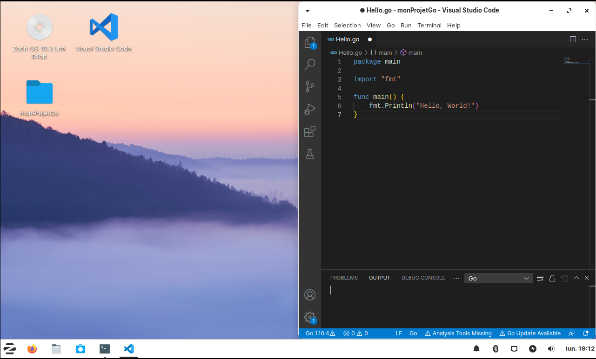
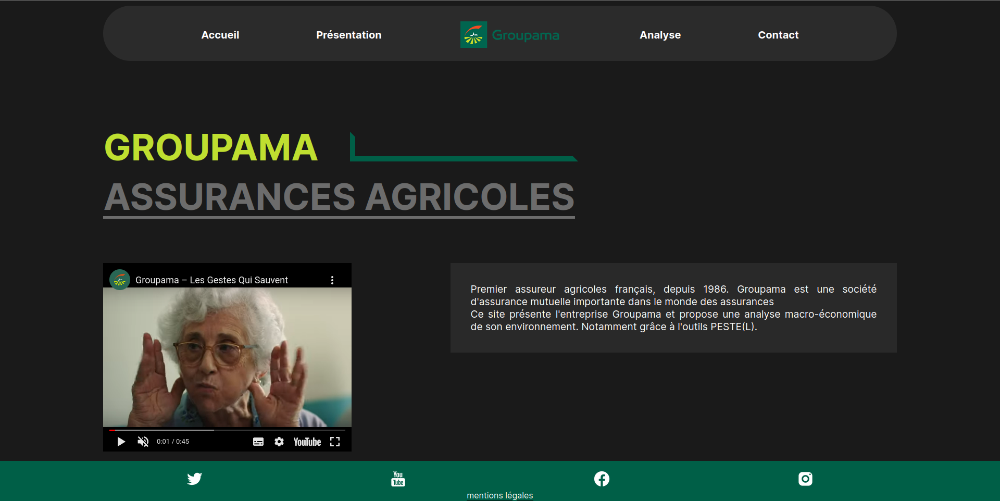
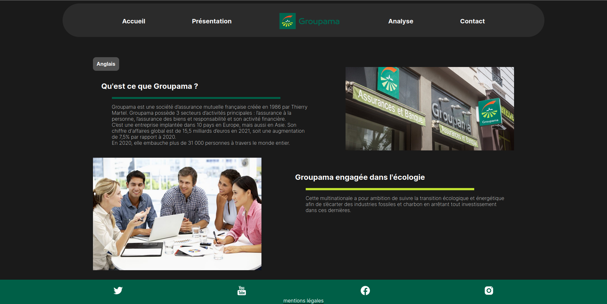
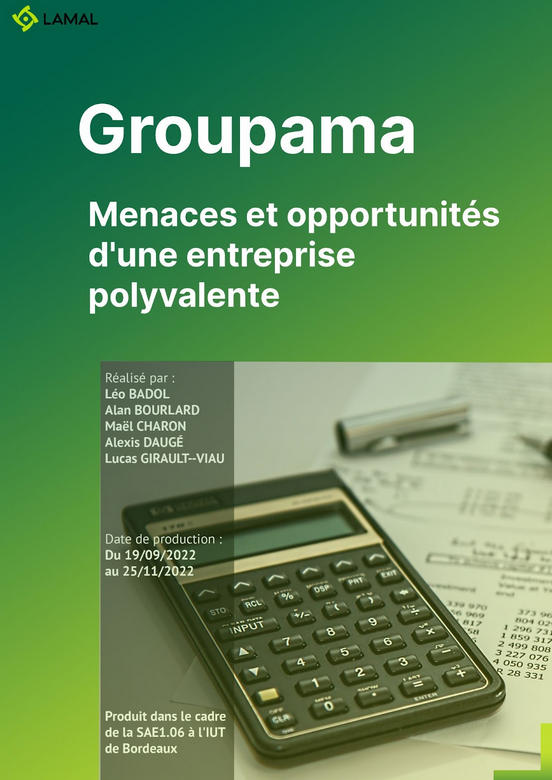

Maël Charon : étudiant en 1ère année de BUT informatique à l'IUT de Bordeaux,
je suis particulièrement intéressé par le développement web, que ce soit front-end ou back-end.
J'apprecierais grandement travailler dans une organisation dont je partage les valeurs et au sein de laquelle je pourrais me sentir réellement utile.
Objectif : Création d'un jeu de plateau numérique en complétant un code
fournit puis développement d'une IA qui joue à ce jeu
Livrables : Code source du jeu et rapport pour la partie IA
Language : JAVA

Résultat de l'IA

Affichage du plateau
Compétences acquises :
Algorithmie
Découpage fonctionnel
Tests unitaires
Installation de poste
Objectif : Créer et configurer une machine virtuelle dans VMware,
dans le but de la livrer,
avec des livrables à une entreprise de création de jeux vidéo fictive.
Livrables : Oral présentant et justifiant les différents choix effectués pendant la création et l'installation de la machine virtuelle et rapport détaillant le processus
Logiciel : VMware Distribution : Ubuntu (Zorin OS)

Configuration de la machine

Bureau et code de test en Go sur la machine installée
Compétences acquises :
Découverte de nouvelles distributions linux
Découverte de VMWare
Commandes bash de base
Rédaction d'un rapport
Création d'une base de données
Objectif : Créer et configurer la base de donnée d'un site de réservation de billets de concerts
Livrables : Dossier d'organisation contenant une planification Gantt, script de création de la base de donnée, script de remplissage de la base de donnée
Langage : SQL
Compétences acquises :
Création d'un modèle conceptuel de données
Création et configuration d'une base de données
Planification des taches avec diagramme Gantt
Recueil de besoins
Objectif : Créer un site web en groupe de 3
Livrables : Fiche persona et code source du site
Langage : HTML / CSS

Page d'accueil

Page analyse
Compétences acquises :
Travail d'équipe
Amélioration de mes compétences en HTML et CSS
Utilisation de Visual Studio Code
Découverte de l'Environnement économique et écologique
Objectif : Réaliser un rapport d'une dizaine de pages sur une entreprise incluant une présentation et le diagnostic externe (Analyse PESTEL + Analyse de la concurrence élargie de Porter) en groupe de 5
Livrables : Oral en cours de projet pour tenir compte de l'avancement et rapport final

Page de garde du rapport
Compétences acquises :
Rédaction d'un rapport structuré
Introduction à l'environnement économique et la gestion d'une entreprise